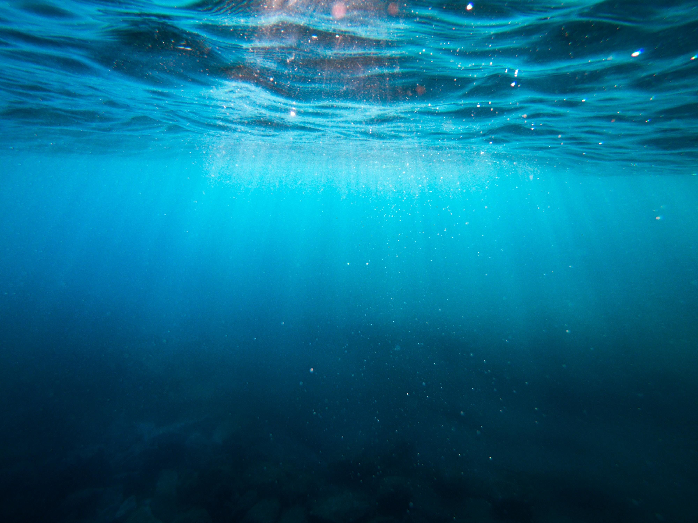
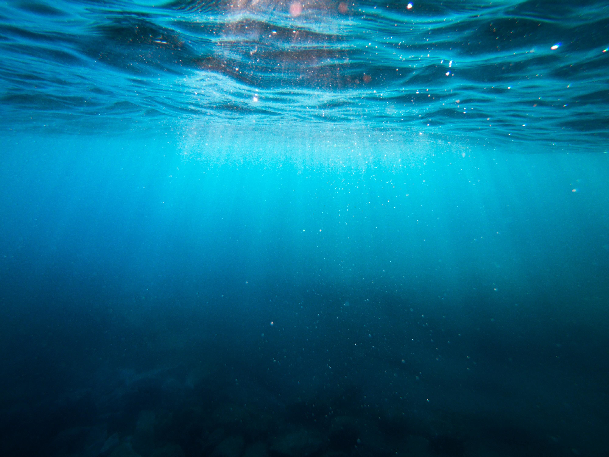

Help Save Our Home
You can help save our home, our planet by buying our merchandise, we sell hoodies, shirts, pants, and more!
Every penny we earn, goes straight to a charity of your choice!
We show some recommended charities but you can
search other charities to donate to if you like.
"Earth is our home
It always will be,
Earth is what we all have in common
Whether we are black, or white
We should keep our planet clean
Or we will have no planet at all
We have to stop littering and polluting our planet,
If we continue doing this we won't have a home.
Earth does not belong to us,
We belong to the Earth
Earth is our home and we should cherish it,
When we heal the Earth, we heal ourselves
When we honor the Earth,
We honor ourselves
The Earth breathes
The most fantastic thing is Earth
Earth is as beautiful as life itself
Earth should be our number one priority in life to keep clean
We should not trash it with whatever garbage we have
Around 13.8 billion years ago,
there was a loud BANG!
And that,
created our Earth."
Go to shop